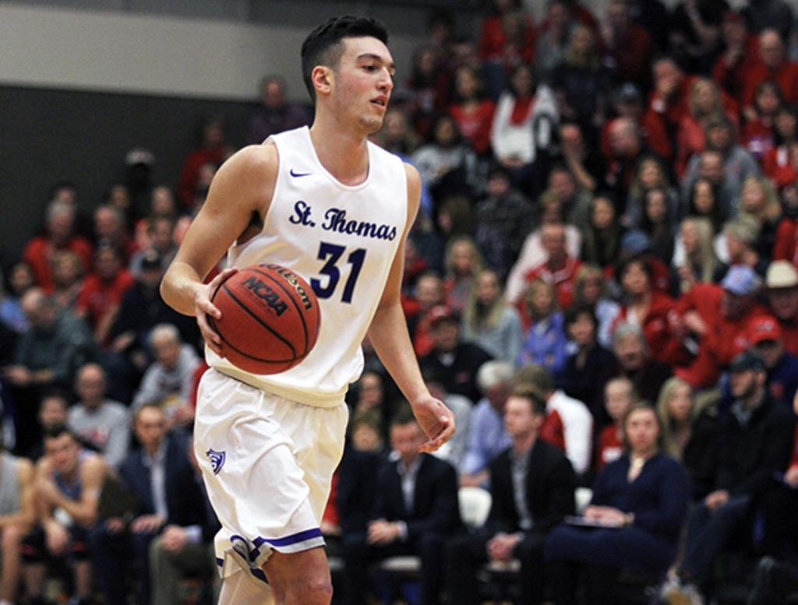

Air Quality App - About
About the project
This project was created in the following with the javascript framework Vue as well as CSS frameworks Skeleton and Normalize. A number of APIs were used to provide all the data for this project.
- LeafletJS for the map functionality
- OpenAQ for the air quality measurements
- LocationIQ for additional location information
Demo video
About us

Douglas Weber
My name is Douglas Weber. I am a senior in my final semester at St. Thomas. For the first two and a half years at St. Thomas, I was a memeber of St. John Vianney Seminary studying Philosophy and Catholic Studies. When I left the seminary, I decide to add a Computer Science major. I have loved studying this and will begin working at software consulting company in January. Some of my hobbies are bowling, playing guitar, and singing.